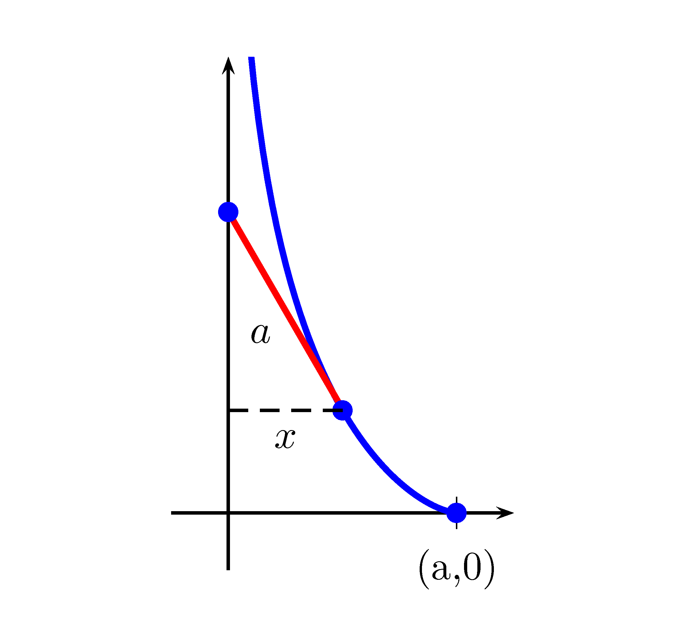

Chapitre 2 Les équations différentielles ordinaires
Vous trouverez à la section 2.6 une application GeoGebra vous permettant de visualiser les solutions d’une équation différentielle homogène d’ordre 2 à coefficients constants. À noter que cette application n’est disponible que dans la version en ligne de ce document.
2.1 Introduction
Les équations différentielles sont à la base de la modélisation de divers phénomènes physiques, statistiques, chimiques, biologiques ou économiques, par exemple. Nous n’étudierons pas en détail comment obtenir ces équations différentielles mais nous verrons comment résoudre trois types d’équations différentielles différents.
Nous étudierons les types suivants:
- Les équations différentielles à variables séparables
- Les équations différentielles linéaires
- Les équations différentielles à coefficients constants d’ordre 2
Exemple 2.1 Voici quelques exemples d’équations différentielles:
- \(\dfrac{dy}{dt}=2ty\)
- \((y^{(5)})^3+8ty^{(1)}+12y=1\)
- \(y''+by'+ky=\sin(\omega x)\)
Exemple 2.2 Voici quelques exemples d’ordre de diverses équations différentielles:
- \(\dfrac{dy}{dt}=2ty\), ordre de 1
- \((y^{(5)})^3+8ty^{(1)}+12y=1\), ordre de 5
- \(y''+by'+ky=\sin(\omega x)\), ordre de 2
2.2 Les équations différentielles à variables séparables
Pour trouver la solution d’une équation différentielle à variables séparables, il faut:
- Mettre l’équation sous la forme différentielle, c’est-à-dire placer les différentielles au numérateur.
- Séparer les variables pour en se basant sur les différentielles.
- Intégrer de chaque côté de l’égalité, c’est-à-dire \(\int M(y)dy=\int N(x)dx\)

2.3 Les équations différentielles linéaires
Exemple 2.13 Voici quelques exemples d’équations différentielles linéaires:
- \(y'+t^2y=t^3\)
- \(x^3y'-x^4y=1\) (Aprés division par \(x^2\))
- \(y'=y\)
Pour être en mesure de résoudre ce type d’équations différentielles, nous devrons tout d’abord utiliser une astuce.
Posons \(\mu(t)\) une fonction inconnue. Nous avons donc: \[\begin{align*} \dfrac{d}{dt}[\mu y] &= \mu\dfrac{dy}{dt}+y\dfrac{d\mu}{dt} \\ &= \mu\left(Q(t)-P(t)y\right) + y\dfrac{d\mu}{dt} \qquad \text{car EDO linéaire}\\ &= \mu Q(t)-\mu P(t)y +y\dfrac{d\mu}{dt} \\ &= \mu Q(t)+y\left(\underbrace{\dfrac{d\mu}{dt}-\mu P(t)}_{\text{posons égal à 0}}\right) \end{align*}\]
Ainsi: \[\begin{align*} \dfrac{d}{dt}[\mu y] &= \mu Q(t) \\ \mu y &= \int \mu Q(t) \ dt\\ y &= \dfrac{1}{\mu} \int \mu Q(t) \ dt \end{align*}\]
Pour pouvoir résoudre l’intégrale précédente, nous avons besoin de connaître \(\mu\) et nous savons que: \[\begin{align*} \dfrac{d\mu}{dt}-\mu P(t) &= 0 \\ \dfrac{d\mu}{dt} &= \mu P(t) \\ \int\dfrac{1}{\mu}d\mu &= \int P(t)dt \\ \ln |\mu| &= \int P(t)dt \\ \mu &= e^{\int P(t)dt} \end{align*}\]
Pour résoudre une équation différentielle linéaire, il faut donc:
- Trouver \(\mu\): \(\mu = e^{\int P(t)dt}\)
- Trouver \(y\): \(y = \dfrac{1}{\mu} \int \mu Q(t) \ dt\)
2.3.1 Problèmes de mélange
Dans des problèmes de mélange, nous cherchons \(Q(t)\) qui représente la quantité d’une substance en fonction du temps. L’équation différentielle de base de ce genre de problèmes est:
Taux de variation de \(Q(t)\) = Taux d’entrée de \(Q(t)\) - Taux de sortie de \(Q(t)\)
Exemple 2.20 Une cuve contient 40 L d’eau pure. De la saumure avec 3 kg de sel par litre entre dans la cuve à un débit constant de 2 L/min, et la mixture mélangée s’écoule à un débit constant de 3 L/min.
- Trouvez la quantité de sel en fonction du temps \(Q(t)\).
- Quelle est la quantité de sel lorsqu’il reste 20 L dans la cuve?
2.3.2 Inverser la dérivée
Pour obtenir une équation différentielle linéaire, il faut parfois étudier l’inverse de votre dérivée.
Plutôt que d’étudier \(\dfrac{dy}{dx}\), nous pouvons étudier \(\dfrac{dx}{dy}\).
2.4 Les équations différentielles à coefficients constants d’ordre 2
2.4.1 Quelques rappels concernant les nombres complexes
Définition 2.8 (Nombre complexe) Un nombre complexe \(z\) s’écrit sous la forme \(z=a+bi\), où \(a,b \in \mathbb{R}\) et tel que \(i^2=-1\).
Nous disons que \(a\) est la partie réelle de \(z\) et \(b\) est la partie imaginaire de \(z\).
L’ensemble des nombres complexes est noté \(\mathbb{C}\).
Nous pouvons également écrire \(z\) sous une form dite polaire qui est \(z=r(\cos(\theta)+i\sin(\theta))\), où \(r=\sqrt{a^2+b^2}\) et \(\theta=\text{Arctan}\left(\dfrac{b}{a}\right)\).La figure 2.1 permet de représenter un nombre complexe de façon géométrique.
Figure 2.1: Représentation d’un nombre complexe
Corollaire 2.1 Nous avons: \[\begin{align*} \cos(\theta) &= \dfrac{e^{i\theta}+e^{-i\theta}}{2} \\ \sin(\theta) &= \dfrac{e^{i\theta}-e^{-i\theta}}{2i} \end{align*}\]
Preuve. Pour démontrer ce résultat, nous utiliserons le théorème 2.1. Nous avons: \[\begin{align} e^{i\theta} &= \cos(\theta)+i\sin(\theta)\tag{2.1} \\ e^{-i\theta} &= \cos(-\theta)+i\sin(-\theta) \notag \\ &= \cos(\theta)-i\sin(\theta)\tag{2.2} \end{align}\]
Si nous additions les équations (2.1) et (2.2): \[\begin{align*} e^{i\theta}+e^{-i\theta} &= \cos(\theta)+i\sin(\theta)+\cos(\theta)-i\sin(\theta) \\ &= 2\cos(\theta) \\ \cos(\theta) &= \dfrac{e^{i\theta}+e^{-i\theta}}{2} \end{align*}\]
Si nous faisons la différence entre les équations (2.1) et (2.2): \[\begin{align*} e^{i\theta}-e^{-i\theta} &= \cos(\theta)+i\sin(\theta)-(\cos(\theta)-i\sin(\theta)) \\ &= 2i\sin(\theta) \\ \sin(\theta) &= \dfrac{e^{i\theta}-e^{-i\theta}}{2i} \end{align*}\]
2.4.2 Les équations différentielles homogènes à coefficients constants d’ordre 2
Le terme homogène indique que le membre de droite de l’équation (2.3) est nul. Nous traiterons le cas à la section 2.4.3.
Avant de résoudre ce type d’équations différentielles, la prochaine proposition sera cruciale.
Preuve. Nous avons que: \[\begin{align*} ay_1''+by_1'+cy_1 &= 0 \\ ay_2''+by_2'+cy_2 &= 0 \end{align*}\] car \(y_1\) et \(y_2\) sont des solutions de (2.3). Nous avons que: \[\begin{align*} y &= C_1y_1+C_2y_2 \\ y' &= C_1y_1'+C_2y_2' \\ y'' &= C_1y_1''+C_2y_2'' \\ \end{align*}\] Ainsi: \[\begin{align*} ay''+by'+cy &= a(C_1y_1''+C_2y_2'')+b(C_1y_1'+C_2y_2')+c(C_1y_1+C_2y_2) \\ &= C_1\underbrace{(ay_1''+by_1'+cy_1)}_{=\ 0}+C_2\underbrace{(ay_2''+by_2'+cy_2)}_{=\ 0} \\ &= 0 \end{align*}\]
Une combinaison linéaire de solutions est aussi une solution.
Nous pouvons maintenant résoudre l’équation (2.3) en supposant que la solution est de la forme \(y=e^{rx}\), où \(r\) est une constante qu’il nous reste à déterminer.
Pour résoudre une équation différentielle homogène d’ordre 2 à coefficients constants, il faut toujours poser la solution \(y=e^{rx}\).
Nous avons donc: \[\begin{align*} y &= e^{rx} \\ y' &= re^{rx} \\ y'' &= r^2e^{rx} \end{align*}\]
Nous substituons ces résultats dans l’équation (2.3): \[\begin{align} a\dfrac{d^2y}{dx^2}+b\dfrac{dy}{dx}+cy &= 0 \notag \\ ar^2e^{rx}+bre^{rx}+ce^{rx} &= 0 \notag \\ e^{rx}(ar^2+br+c) &= 0 \notag \\ ar^2+br+c &= 0\tag{2.4} \end{align}\]
L’équation (2.4) se nomme polynôme caractéristique de l’équation (2.3). Déterminer les valeurs de \(r\) revient à trouver les racines du polynôme caractéristique et donc: \[\begin{align*} r_{1,2} &= \dfrac{-b\pm\sqrt{b^2-4ac}}{2a} \end{align*}\] Nous devrons étudier trois cas distincts qui dépendent du discriminant \(b^2-4ac\).
2.4.2.1 Cas 1: \(b^2-4ac>0\)
Dans ce cas, le polynôme caractéristique fournit deux valeurs de \(r\) réelles, que nous notons \(r_1\) et \(r_2\). Nous avons donc \(y_1(x)=e^{r_1x}\) qui est une solution de (2.3) et également \(y_2=e^{r_2x}\). Par la proposition 2.1, nous obtenons la solution générale: \[\begin{align*} y(x) &= C_1e^{r_1x}+C_2e^{r_2x} \end{align*}\] où \(C_1,C_2\in\mathbb{R}\).
2.4.2.2 Cas 2: \(b^2-4ac<0\)
Dans ce cas, le polynôme caractéristique fournit deux valeurs de \(r\) complexes. Posons \(\gamma=-\dfrac{b}{2a}\) et \(\omega=\dfrac{\sqrt{4ac-b^2}}{2a}\) ce qui implique que \(r_1=\gamma+\omega i\) et \(r_2=\gamma -\omega i\). Nous avons donc deux solutions à l’équation (2.3), soit \(y_1=e^{r_1x}=e^{(\gamma+\omega i)x}\) et \(y_2=e^{r_2x}=e^{(\gamma-\omega i)x}\).
Puisque les solutions précédentes sont complexes, nous allons utiliser la proposition 2.1 et le corollaire 2.1 pour créer deux nouvelles solutions réelles: \[\begin{align*} y_3(x) &= \dfrac{y_1(x)+y_2(x)}{2} \\ &= \dfrac{e^{(\gamma+\omega i)x}+e^{(\gamma-\omega i)x}}{2} \\ &= e^{\gamma x}\left( \dfrac{e^{\omega i x}+e^{-\omega i x}}{2} \right) \\ &= e^{\gamma x}\cos(\omega x) \\ y_4(x) &= \dfrac{y_1(x)-y_2(x)}{2i} \\ &= \dfrac{e^{(\gamma+\omega i)x}-e^{(\gamma-\omega i)x}}{2i} \\ &= e^{\gamma x}\left( \dfrac{e^{\omega i x}-e^{-\omega i x}}{2i} \right) \\ &= e^{\gamma x}\sin(\omega x) \end{align*}\]
D’où la solution générale de l’équation (2.3) est: \[\begin{align*} y(x) &= e^{\gamma x}\left( C_1\cos(\omega x)+C_2\sin(\omega x) \right) \end{align*}\]
2.4.2.3 Cas 3: \(b^2-4ac=0\)
Dans ce cas, nous n’obtenons qu’une seule valeur de \(r=-\dfrac{b}{2a}\). Puisque nous n’avons qu’une seule solution, nous devons en trouver une autre pour être en mesure de construire une combinaison linéaire. Nous allons démontrer que \(y_2(x)=xe^{rx}\) est aussi une solution de l’équation différentielle (2.3).Preuve. \[\begin{align*} y_2 &= xe^{rx} \\ y_2' &= e^{rx}+rxe^{rx} \\ y_2'' &= re^{rx}+re^{rx}+r^2xe^{rx} \end{align*}\] Et donc: \[\begin{align*} ay'' +by' +cy &= 0 \\ a(2re^{rx}+r^2xe^{rx})+b(e^{rx}+rxe^{rx})+c(xe^{rx}) &= 0 \\ e^{rx}(2ar+ar^2x+b+brx+cx) &= 0 \\ e^{rx}(\underbrace{(ar^2+br+c)}_{=0}x+\underbrace{(2ar+b)}_{=0}) &= 0 \end{align*}\]
La solution générale est donc de la forme: \[\begin{align*} y(x) &= C_1e^{rx}+C_2xe^{rx} \end{align*}\]
Exemple 2.26 Trouvez les solutions des équations différentielles suivantes:
- \(y''-9y'+20y=0\)
- \(2y''-4y'+8y=0\)
- \(y''+6y'+9=0\)
2.4.3 Les équations différentielles non homogènes à coefficients constants d’ordre 2
Pour résoudre ce type d’équations différentielles, nous aurons besoin du théorème suivant:
Théorème 2.2 Soit une équation différentielle de la forme: \[\begin{align*} a\dfrac{d^2y}{dx^2}+b\dfrac{dy}{dx}+cy &= F(x) \end{align*}\] La solution de cette équation différentielle est de la forme: \[\begin{align*} y(x) &= C_1y_1(x)+C_2y_2(x)+y_p \end{align*}\] où \(y_1\) et \(y_2\) sont les solutions de l’équation homogène associée à l’équation (2.5), c’est-à-dire: \[\begin{align*} a\dfrac{d^2y}{dx^2}+b\dfrac{dy}{dx}+cy &= 0 \end{align*}\] et \(y_p\) est une solution particulière de l’équation non homogène.
Nous verrons deux méthodes pour trouver \(y_p\).
2.4.3.1 La méthode des coefficients indéterminés
Cette méthode consiste à étudier la nature de la fonction \(F(x)\) et à supposer que \(y_p\) est de même nature. La table 2.1 montre la forme de la solution particulière \(y_p\) selon la nature de \(F(x)\).
| Forme de \(F(x)\) | Forme de \(y_p\) |
|---|---|
| Polynôme de degré \(n\) | \(y_p=a_nx^n+a_{n-1}x^{n-1}+\ldots+a_x+a_0\) |
| \(F(x)\) possède un \(\sin(\omega x)\) et/ou un \(\cos(\omega x)\) | \(y_p=A\cos(\omega x)+B\sin(\omega x)\) |
| \(F(x)\) possède une exponentielle \(e^{\alpha x}\) | \(y_p=A^{\alpha x}\) |
2.4.3.2 La méthode de variation des paramètres (ou méthode de Lagrange)
La méthode de variation des paramètres est souvent plus longue à utiliser que la méthode des coefficients indéterminés, par contre, elle est valide pour tous les types de fonctions \(F(x)\).
Nous débutons en trouvant les solutions \(y_1\) et \(y_2\) de l’équation différentielle homogène associée à l’équation: \[\begin{align*} ay''+by'+cy=F(x) \end{align*}\]
Supposons que la solution est de la forme : \[\begin{align*} y(x) &= \mu_1(x)y_1(x)+\mu_2(x)y_2(x) \end{align*}\] Afin d’alléger la notation, nous omettrons la dépendance en \(x\). Nous cherchons donc \(\mu_1\) et \(\mu_2\). Avant de substituer dans l’équation différentielle, nous allons trouver les dérivées successives de \(y\). \[\begin{align*} y' &= \mu_1y_1'+\mu_1'y_1+\mu_2'y_2+\mu_2y_2' \end{align*}\] Nous allons maintenant faire la supposition que \(\mu_1'y_1+\mu_2'y_2=0\) et donc: \[\begin{align*} y' &= \mu_1y_1'+\mu_2y_2' \end{align*}\] Trouvons maintenant la dérivée seconde: \[\begin{align*} y' &= \mu_1'y_1'+\mu_1y_1''+\mu_2'y_2'+\mu_2y_2'' \end{align*}\] Nous avons donc: \[\begin{align*} ay''+by'+cy &= F(x) \\ a(\mu_1'y_1'+\mu_1y_1''+\mu_2'y_2'+\mu_2y_2'')+b(\mu_1y_1'+\mu_2y_2')+c(\mu_1y_1+\mu_2y_2) &= F(x) \\ \mu_1\underbrace{(ay_1''+by_1'+cy_1)}_{=0}+\mu_2\underbrace{(ay_2''+by_2'+cy_2)}_{=0}+\mu_1'y_1'+\mu_2'y_2' &= F(x) \\ \mu_1'y_1'+\mu_2'y_2' &= F(x) \end{align*}\] Ainsi, pour déterminer \(\mu_1\) et \(\mu_2\), nous avons les deux équations suivantes: \[\begin{align*} \mu_1'y_1+\mu_2'y_2 &= 0 \\ \mu_1'y_1'+\mu_2'y_2' &= F(x) \end{align*}\] Nous pouvons utiliser la méthode de Cramer pour résoudre ce système d’équations linéaires: \[\begin{align*} \mu_1'&= \dfrac{ \begin{vmatrix} 0&y_2\\ F(x)&y_2' \end{vmatrix}}{ \begin{vmatrix} y_1 &y_2\\ y_1'&y_2' \end{vmatrix} }=-\dfrac{y_2F(x)}{W(y_1,y_2)}\\ \mu_2'&= \dfrac{ \begin{vmatrix} y_1&0\\ y_1'&F(x) \end{vmatrix}}{ \begin{vmatrix} y_1 &y_2\\ y_1'&y_2' \end{vmatrix} }=\dfrac{y_1F(x)}{W(y_1,y_2)} \end{align*}\]
Définition 2.11 (Wronskien) Nous appelons le Wronskien de deux fonctions \(y_1\) et \(y_2\), le résultat suivant: \[\begin{align*} W(y_1,y_2)=\begin{vmatrix} y_1 &y_2\\ y_1'&y_2' \end{vmatrix} \end{align*}\]
Nous pouvons maintenant trouver nos deux fonctions \(\mu_1\) et \(\mu_2\): \[\begin{align*} \mu_1&=-\int \dfrac{y_2(x)F(x)}{W(y_1,y_2)}dx\\ \mu_2&=\int \dfrac{y_1(x)F(x)}{W(y_1,y_2)}dx \end{align*}\]
Exemple 2.31 Trouvez les solutions des équations différentielles suivantes en utilisant les deux méthodes:
- Méthode des coefficients indéterminés
- Méthode de variation des paramètres
- \(y''-2y'+y=2x\)
- \(y''-y'-6y=e^{-x}\)
2.5 Applications des équations différentielles du deuxième ordre à coefficients constants
Nous discuterons en particulier de l’oscillateur harmonique forcé.
Exemple 2.32 (Oscillateur harmonique forcé) Soit un ressort de constante \(k\) auquel nous attachons une masse \(M\). Si le frottement est proportionnel à la vitesse de la masse et que celle-ci subit une force périodique, nous pouvons décrire le mouvement avec l’équation suivante: \[\begin{align*} \dfrac{d^2x}{dt^2}+\dfrac{c}{M}\dfrac{dx}{dt}+\dfrac{k}{M}x &= \dfrac{F_0}{M}\cos(\omega t) \end{align*}\] Nous pouvons réécrire l’équation précédente en introduisant les variables \(b=\dfrac{c}{2M}\) et \(a=\sqrt{\dfrac{k}{M}}\): \[\begin{align*} \dfrac{d^2x}{dt^2}+2b\dfrac{dx}{dt}+a^2x &= \dfrac{F_0}{M}\cos(\omega t) \end{align*}\] Ce changement nous simplifiera le travail.
- Trouvez la solution homogène de l’équation différentielle.
- Supposez que \(b=0\), c’est-à-dire qu’il n’y a pas de frottement. Trouvez la solution particulière dans le cas où \(a\neq \omega\). (Vous étudiez dans ce cas la situation des battements). Pour en savoir plus sur le phénomène de battements.
- Supposez que \(b=0\), c’est-à-dire qu’il n’y a pas de frottement. Trouvez la solution particulière dans le cas où \(a =\omega\). (Vous étudiez dans ce cas la situation de résonnance) Pour voir en action le phénomène de résonnance, Tacoma Narrows Bridge .
2.6 GeoGebra
2.7 Pages supplémentaires
Des pages blanches supplémentaires pour ajouter, potentiellement, de nouveaux exemples et exercices.